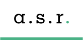

Ranglister Finans, data & forsikringsmægling ASR Nederland

ASR Nederland
Et blik på de samme fund, ikke en ny score. Sådan virker det
Kort fortalt
Scoren er 70 af 100. Aktien er blevet dyr i forhold til den forventede vækst: kursen er op 28 % på et år, og aktien koster mere end nogensinde de seneste år og mere end konkurrenten NN Group, mens analytikerne kun venter ca. 1 % vækst. Kapitalbufferen er solid, udbyttet er hævet 9,4 %, og der købes aktier tilbage. Aegon ejer stadig ca. 24 % og kan sælge mere.
En stærk score: modellen fandt få alvorlige problemer, men analytikerne ser begrænset opside herfra.
Største fradrag
- Multipler mod egen historik−6
- Opkøbsdrevet vækst−3
- Forretningsmix−2
Styrker
- Udbytte og tilbagekøb+2
- Kapital og kapitalgenerering+2
- Organisk vækst+1
Sådan er scoren bygget op
Fra 100 til 70, trin for trin: point trækkes fra for forretningen, prisen og revnerne, lægges til for dokumenterede styrker, og så følger tre datajusteringer.
Hold musen over et trin eller vælg det for at se, hvad der drev det. Trin med fund åbner dem nedenfor.
Nøgletal
Pr. 6 nov. 2026. Analytikernes kursmål er ofte optimistiske; læs opsiden som et fingerpeg, ikke en prognose.
- Pris
- 77.26 EUR
- Analytikernes mediankursmål
- 77.50 EUR
- Opside til median
- +0.3%
- Analytikere
- 14
- Kursmålsinterval
- 52.50 – 90.00 EUR
- 52-ugers ændring
- +33%
- P/E (historisk)
- 15.5
- Forward P/E
- 11.9
- PEG
- 3.98
Fund
Hvert fradrag og hvert plus med sin kilde. Åbn et trin for at læse dem.
Forretning
Bliver virksomheden stærkere, ikke bare større? · 2 fund−5 af −30
- −3Opkøbsdrevet vækstOmsætningen er vokset via opkøb (Aegon Nederland i 2023, betalt delvist med aktier, så aktietallet steg ca. 46 % i 2023 og 16 % i 2024, og nu Bovemij); analytikerne venter kun ca. +1 % EPS i både 2026 og 2027.
- −2ForretningsmixSundhedsforsikring kører med combined ratio 99,6 % (næsten intet overskud), og en stor, moden livs- og pensionsbog fra Aegon-købet binder kapital med lavt afkast.
Pris
Dagens multipler målt mod selskabets egen historik og konkurrenterne. · 2 fund−7 af −35
- −6Multipler mod egen historikP/B 1,40 mod 0,73–1,22 i 2021–2025 og forward P/E 11,3 mod 7,5–10,8 (begge rekordhøje); udbytteafkastet 4,7 % er under 5,9–8,1 % i samme periode. Kursen er +28 % på et år.
- −1PeersForward P/E 11,3 og P/B 1,40 mod NN Group (9,8 og 0,98) med samme hollandske livs- og pensionsprofil; præmien over NN er større end forskellen i vækst (begge venter lav EPS-vækst).
Revner
Cash flow, kunder, gæld, insidere, guidance og det, der ligger bag hovedtallene. · 5 fund−6 af −35
- −2Aktieoverhæng fra AegonAegon ejer stadig ca. 24 % efter at have solgt 12,5 mio. aktier til 56 EUR i sep. 2025; lock-up på 180 dage er udløbet, og Aegon vil reducere sin kapital på holdingniveau, så nye placeringer kan presse kursen.
- −1ArbejdsudygtighedLedelsen melder om usikkerhed i arbejdsudygtighedsforretningen på grund af forhøjet incidens (combined ratio 93,3 %).
- −1IndtjeningskvalitetSkadesforsikringens combined ratio (89,9 %) er løftet af positive afløb fra tidligere år og ligger under målintervallet på 92–94 %; niveauet er ikke holdbart.
- −1Pensionsbuy-outsKonkurrencen om pensionsbuy-outs er hård, og ledelsen erkender, at mulighederne kan blive skubbet til efter 2027; en central vækstmotor er dermed usikker.
- −1
Plus
Kun dokumenterede styrker. · 3 fund+5 af +15
- +2Udbytte og tilbagekøbUdbytte 693 mio. + tilbagekøb 292 mio. EUR (TTM) = 985 mio., under nettoresultatet på 1.142 mio.; interimudbyttet hævet 9,4 % til 1,39 EUR og tilbagekøb på 175 mio. gennemført.
- +2Kapital og kapitalgenereringRekord-OCC på 773 mio. (+7 %) i H1, på vej mod målet på 1,35 mia. i 2026; Solvens II 222 %, operationelt resultat +10 % og operationel ROE over 15 % mod målet på over 12 %.
- +1Organisk vækstSkadespræmierne voksede 6 % (over målet på 3–5 %), gebyrindtægterne 33 % og annuitetstilgangen 38 %; Aegon-integrationen er afsluttet.
Forbehold
Det, scoren ikke fanger, eller hvor dataene er svage.
Også i Finans, data & forsikringsmægling
De højeste scorer i samme branche.